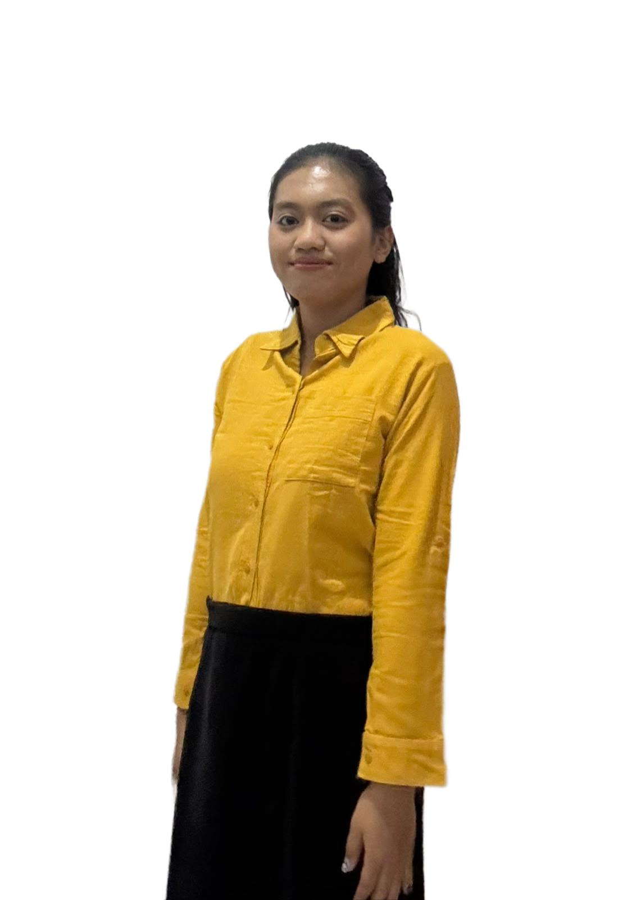

Hello, I'm
Emily Vitasya Haloho
Data Analyst | Actuarial Science Graduate
Passionate about turning data into clear, actionable insights. I enjoy exploring data analytics, statistical modeling, and business intelligence to help teams make better decisions.

Curious mind, structured thinker
I am an Actuarial Science graduate (S1) from Institut Teknologi Sumatera (ITERA), with a strong foundation in statistics, data analysis, financial mathematics, and risk modeling.
I enjoy working with data to find patterns, test assumptions, and communicate results clearly. My projects cover operational analysis, customer churn prediction, and statistical study, using Python, SQL, and R.
Outside of data, I have experience in leadership and academic support through student organizations, teaching assistant roles, and community programs for small businesses.
-
Analytical
Breaks down complex problems into measurable parts.
-
Detail-oriented
Checks data quality and methodology before drawing insights.
-
Problem Solver
Turns findings into recommendations that support decisions.
Tools and methods I work with
Programming & Data Analysis
Data Visualization & Business Intelligence
Statistical & Analytical Methods
Other Tools
Selected work
Case studies from data analysis, data science, and business intelligence.
Key numbers at a glance
Pick a project to see its headline metrics and breakdowns.
Experience & education
-
Aug 2023 – Dec 2023
Facilitator (MBKM Program)
BTPN Syariah, Bandar Lampung
- Educated customers on financial literacy and small business management, including basic bookkeeping of income, expenses, and cash flow.
- Collected business data and prepared periodic progress reports on the program.
-
Jul 2023 – Aug 2023
Intern
BPJS Ketenagakerjaan, North Sumatra
- Verified participant documents and processed membership data to keep administrative records accurate.
- Coordinated with internal teams to deliver services to participants effectively.
-
Aug 2021 – Jun 2023
Teaching Assistant
Institut Teknologi Sumatera (ITERA)
- Assisted lab sessions for Statistical Data Analysis (RStudio) and Actuarial Computing, guiding students through analysis and modeling tasks.
- Assisted tutorials for Basic Physics and graded assignments with academic feedback.
-
Aug 2021 – Dec 2024
Internal Staff
HIMAKTU ITERA (Student Organization)
- Coordinated internal activities and member engagement programs.
- Managed membership administration and internal documentation.
-
2020 – 2026
B.Sc. in Actuarial Science
Institut Teknologi Sumatera (ITERA), Lampung
GPA 3.38 / 4.00
Courses & certificates
Articles & write-ups
Let's work together
Open to data analyst opportunities, collaborations, and conversations about data.